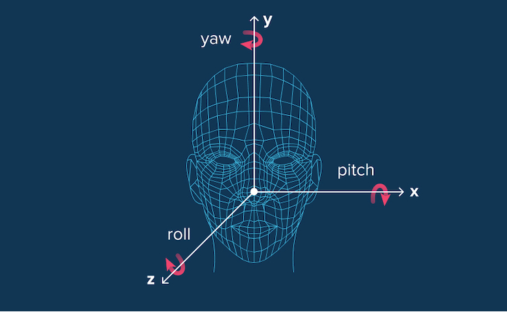
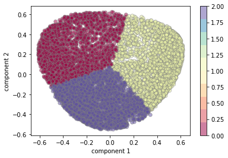
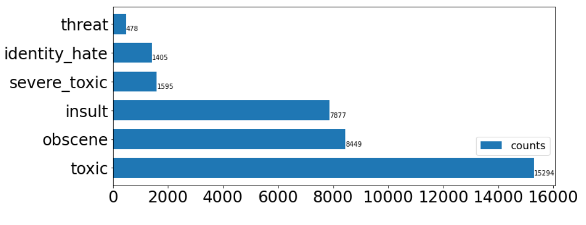
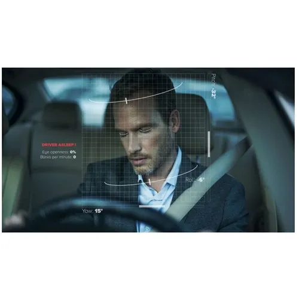

In the project we get the headpose from '2d' landmarks not 3d landmarks..
To do so with the classical way they have to fit the 2d points with a 3d face model which is considered as a fitting technique. At the end, it is not a deterministic solution and has its problems.
Here comes the ML to replace the 3d fitting assumption, the camera parameters and the projection equations


Using PyTorch we Create a list of documents after processing it and feed it to feedforward
neural network then save the model.
Build statistical model that can correct only one word using 4 processes:
delete, switch, replace, insert, then use n-gram model so we could correct
a complete science , then we fine-tuned T5 model with JFLEG dataset.

Perform EDA on CC dataset, then Using K_Means, DBSCAN for Clustering
Customers, Isolation Forest to Detect Anomalies.

Perform EDA on UCI dataset to Show the Heights Crime Cities, and the Most
Common Crimes in US. .

Real time project Detects the Drowsiness Level and Alarm the Driver
In this project we build a DL models that’s capable of detecting different types of of toxicity like threats, obscenity, insults, and identity-based hate, do EDA on the dataset of comments from Wikipedia’s talk page edits